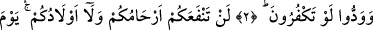

EĞER RIZÂMI
KAZANMAK İÇİN ÇIKMIŞSANIZ
Bismillâhirrahmânirrahîm
1. Ey îman edenler! Eğer benim yolumda savaşmak ve rızâmı kazanmak için
çıkmışsanız, benim de düşmanım, sizin de düşmanınız olanlara sevgi göstererek,
gizli muhabbet besleyerek onları dost edinmeyin. Oysa onlar, size gelen gerçeği
inkâr etmişlerdir. Rabbiniz Allah’a inandığınızdan dolayı Peygamber’i de sizi de
yurdunuzdan çıkarıyorlar. Ben, sizin saklı tuttuğunuzu da, açığa vurduğunuzu da en
iyi bilenim. Sizden kim bunu yaparsa (onları dost edinirse) doğru yoldan sapmış
olur.
2. Şâyet onlar sizi ele geçirirlerse, size düşman kesilecekler, size ellerini ve
dillerini kötülükle uzatacaklardır. Zaten inkâr edivermenizi istemektedirler.
3. Kıyamet günü yakınlarınız ve çocuklarınız size fayda vermezler. Çünkü Allah
aranızı ayırır. Allah, yaptıklarınızı görendir.
“Ey îman edenler! Eğer benim yolumda savaşmak ve rızâmı kazanmak için
çıkmışsanız, benim düşmanım, sizin de düşmanınız olanlara sevgi göstererek, gizli
muhabbet besleyerek onları dost edinmeyin.” Bu âyet, Hâtıb b. Ebî Beltea el-‘Absî
hakkında nâzil olmuştur. Hâtıb adındaki bu zat, Keşfü’l-esrar’da ifâde edildiğine göre
Rasûlullah (s.a.) zamanında doğmuş aslen Yemen’de bir kabile olan Ezd’lilerdendir.
Hâtıb’ı Ubeydullah b. Hamid b. Züheyr azâd etmiştir. Hz. Ali (r.a.), Bedir savaşında
Ubeydullah’ı inkârcı olduğu halde öldürmüştü. Hâtıb, yemek satmakla geçinirdi.